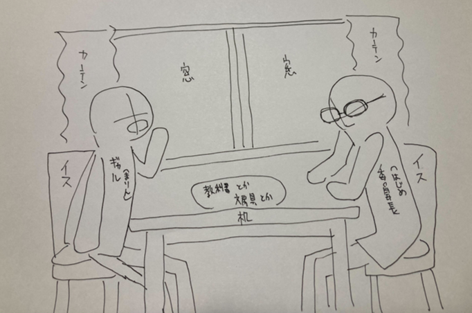

🔒 パスワードを入力
入る
閉じる
二人の物語を見届けていただき
ありがとうございました。
同じ場所にはいられなくても
はじめとまりんの時間は
確かにここにありました。
物語を最初から読むキーワード
【始まりの物語】
クリア報告をXにシェアする
閉じる
クレジット
制作
兎月竜之介
X：@usaginabe
音楽
RYU ITO
https://ryu110.com/
効果音
OtoLogic
https://otologic.jp/
イラスト
使用イラスト：ここに作者名を記載
閉じる
タイマー設定
作業時間（分）
休憩時間（分）
開始
閉じる
25:00
一時停止
作業終了
閉じる
🎧nook: Quiet Talk

まりん
はじめ
タイマー設定
25:00
🎨
ⓘ
No track